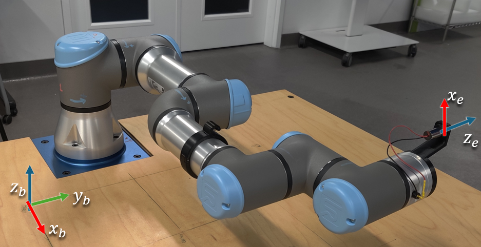

Week 06 — Forward Kinematics Lab 1.2
Objectives
- Implement a ROS 2 publisher node (Python/rclpy) to command a UR3e in Gazebo.
- Derive the Forward Kinematics for the UR3e using DH Transformations
- Validate FK numerically against the simulator’s reported pose and reason about modeling error sources. Compare against the values obtained from last week's lab
Useful Files
{kind=link}
{kind=link}
Procedure
Step 1: Pull the latest version of the Repo
The repository and docker files has been updated to include the updated simulation tools so you'll need to build the docker environment again
Before doing that take a backup of your current /src folder so that you don't accidentally lose access to your previous work.
Next, we pull the latest version of the repository
Next, we add a helper package to the repository:
Step 2: Build and run docker
For MacOS/VM users, change Line no. 4 in the docker file humble-enme480_ur3e.Dockerfile at ~/ENME480_mrc/docker
# BEFORE
FROM osrf/ros:humble-desktop AS humble-mod_desktop
# AFTER
FROM arm64v8/ros:humble AS humble-mod_desktop
Do not do this on anything other than a MAC! MACs require code that has been compiled in a special way in order to work and this code does not work on other computers!
For Everyone, run
cd ~/ENME480_mrc/docker/
userid=$(id -u) groupid=$(id -g) docker compose -f humble-enme480_ur3e-compose.yml build
Create the startDocker.sh and connectToDocker.sh scripts again if you haven't yet
For people not using the Nvidia container, run:
cd
echo -e "#"'!'"/bin/bash\nexport userid=$(id -u) groupid=$(id -g)\ncd ~/ENME480_mrc/docker\ndocker compose -f humble-enme480_ur3e-compose.yml run --rm enme480_ur3e-docker" > startDocker.sh
echo -e "#"'!'"/bin/bash\ncontainer="'$(docker ps | grep docker-enme480_ur3e-docker-run | cut -b 1-12)'"\necho Found running container "'$container'". Connecting...\ndocker exec -ti "'$container'" bash" > connectToDocker.sh
For people who are using the Nvidia container, run:
cd
echo -e "#"'!'"/bin/bash\nexport userid=$(id -u) groupid=$(id -g)\ncd ~/ENME480_mrc/docker\ndocker compose -f humble-enme480_ur3e-nvidia-compose.yml run --rm enme480_ur3e-docker" > startDocker.sh
echo -e "#"'!'"/bin/bash\ncontainer="'$(docker ps | grep docker-enme480_ur3e-docker-run | cut -b 1-12)'"\necho Found running container "'$container'". Connecting...\ndocker exec -ti "'$container'" bash" > connectToDocker.sh
To start the docker container, run
To connect to the same docker container from another terminal, run
Step 3: Build the workspace
Preliminary instllations
Now, we build the workspace for the simulation
--symlink-install speeds Python iteration by avoiding rebuilds for script-only changes.
Once done, source it
Step 4: Launch the Simulation
Now we will test if the simulation environment is working
- Use
tmuxto manage multiple panes. Create several panes to work with the Gazebo simulation: tmux# Start a new sessionCtrl+A b# Split horizontally-
Ctrl+A v# Split vertically -
Terminal/Pane 1: Launch MRC UR3e Gazebo simulation in one of the
tmuxpanes: - Terminal/Pane 2: Launch MRC UR3e sim control package in a different
tmuxpane: - Terminal/Pane 3: Example command to move the arm:
Step 5: Solve the UR3e DH Table
The main point of todays lab is to validate the measurements you took in lab last week. To do this, you will be solving the Forward Kinematics for the UR3e arm. Below, we have included some helpful images to get you started.

This is the robot in its zero configuration. Your DH Table should correspond to this when you have all free variables set to 0.
This is a schematic showing the lengths of the different links on the robot.
Tips:
- Remember that you can make fixed DH Frames that don't have any free parameters. Sometimes, a transform may not be doable using the standard DH convention and this is necessary.
- Each one of the 6 blue caps on the robot is a motor, meaning each one introduces a new free varaible representing the bending in the joint.
- This means that, counting the base frame (0) and the end effector frame (E) you should have minimum 8 DH frames.
- Your code should be a funciton which takes in a list of angles (free DH parameters) and returns the transform between the base and end effector.
-
To help debug your code, you can use some of the tools we've mentioned in prior labs:
- Going to RQT --> Visualization --> TF Tree will show you the list of every frame in the currently active robot.
- Going to your terminal and running the command
will show you the current transform. Note that you will need to replace SOURCE_FRAME and TARGET_FRAME with actual frames from your TF tree! TF2 (the transform library within ROS) lets you skip frames, so you can find the transform between the base and end effector directly, for example. This can be used to debug your coe by printing out your intermediate transforms and verifying them against what tf2 says.
Step 6: Create a publisher script to move the arm
Here, you need to write a publisher script to:
- Move the robot (using
/ur3e/command) - Calculate the end effector position using DH Transformations
You are encouraged to write the entire publisher script on your own, but we have also provided a helper script if needed.
The script is located at ~/enme480_ws/src/ur3e_enme480/ur3e_enme480/ur3e_fk.py.
In the helper script, we have added an approximately correct end effector transformation matrix relative to the table's origin (0,0) for reference. The script also calculates an estimated position where the laser pointer will hit the workbench depending on the DH calculations.
You should also be able to see the approximate final position of the end-effector fromm the ur3/position topic:
Since you know the position and orientation of the end effector (attached with a laser pointer), you have to predict where the laser point will land on the workbench. (Hint: Think in terms of vector and plane intersection)
Assume the z_table = 0.
We are providing you with the code in lab (hidden in the backend), but you need to show the math behind it in your lab report.
Turning on the laser pointer:
Test Points (same as last week, but in degrees)
Run the robot for the following test points:
| Test Point Inputs (ùúΩùüè, ‚Ķ ùúΩùüî) | End Effector Position (Your Code) (x y z) |
Laser Position on Workbench (from Code) (x,y) |
Laser Position on Workbench(Measured) (x, y) |
|---|---|---|---|
| [0, -45, 0, 45, -90, 60] | |||
| [-30, -60, 80, -10, -90, -30] | |||
| [30 -70 80 -10 -90 10] | |||
| [-30, -60, 60, -10, -90, -30] |
Deliverables/Submission
Report (PDF)
-
Clear frame assignments & axes drawings.
-
DH table with your chosen convention and parameter definitions.
-
Step-by-step derivation for the laser–plane intersection.
-
Error analysis (≥3 points): quantify FK vs. sim pose (from
/ur3e/position) vs. correct DH transform and laser prediction error; discuss atleast 4-5 sources of error -
Short description of your publisher (design & message format).
Code
- The FK function and the publisher function you modified (with comments).
Results
-
Filled test table (above).
-
Plots or tables comparing predicted vs. measured laser positions.
Feel free to explore tools like rqt to get a deeper understanding of how the nodes are interacting with each other.